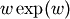
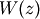
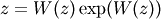
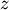

scipy.special.lambertw¶
- scipy.special.lambertw(z, k=0, tol=1e-8)¶
Lambert W function.
The Lambert W function W(z) is defined as the inverse function of . In other words, the value of  is such that  for any complex number .
The Lambert W function is a multivalued function with infinitely many branches. Each branch gives a separate solution of the equation . Here, the branches are indexed by the integer k.
Parameters : z : array_like
Input argument
k : integer, optional
Branch index
tol : float
Evaluation tolerance
Notes
All branches are supported by lambertw:
- lambertw(z) gives the principal solution (branch 0)
- lambertw(z, k) gives the solution on branch k
The Lambert W function has two partially real branches: the principal branch (k = 0) is real for real z > -1/e, and the k = -1 branch is real for -1/e < z < 0. All branches except k = 0 have a logarithmic singularity at z = 0.
Possible issues
The evaluation can become inaccurate very close to the branch point at -1/e. In some corner cases, lambertw might currently fail to converge, or can end up on the wrong branch.
Algorithm
Halley’s iteration is used to invert w exp(w), using a first-order asymptotic approximation (O(log(w)) or O(w)) as the initial estimate.
The definition, implementation and choice of branches is based on Corless et al, “On the Lambert W function”, Adv. Comp. Math. 5 (1996) 329-359, available online here: http://www.apmaths.uwo.ca/~djeffrey/Offprints/W-adv-cm.pdf
TODO: use a series expansion when extremely close to the branch point at -1/e and make sure that the proper branch is chosen there
Examples
The Lambert W function is the inverse of w exp(w):
>>> from scipy.special import lambertw >>> w = lambertw(1) >>> w
0.56714329040978387299996866221035555 >>> w*exp(w) 1.0
Any branch gives a valid inverse:
>>> w = lambertw(1, k=3) >>> w
(-2.8535817554090378072068187234910812 + 17.113535539412145912607826671159289j) >>> w*exp(w) (1.0 + 3.5075477124212226194278700785075126e-36j)
Applications to equation-solving
The Lambert W function may be used to solve various kinds of equations, such as finding the value of the infinite power tower z^{z^{z^{ldots}}}:
>>> def tower(z, n):
... if n == 0: ... return z ... return z ** tower(z, n-1) ... >>> tower(0.5, 100) 0.641185744504986 >>> -lambertw(-log(0.5))/log(0.5) 0.6411857445049859844862004821148236665628209571911
Properties
The Lambert W function grows roughly like the natural logarithm for large arguments:
>>> lambertw(1000)
5.2496028524016 >>> log(1000) 6.90775527898214 >>> lambertw(10**100) 224.843106445119 >>> log(10**100) 230.258509299405
The principal branch of the Lambert W function has a rational Taylor series expansion around z = 0:
>>> nprint(taylor(lambertw, 0, 6), 10)
[0.0, 1.0, -1.0, 1.5, -2.666666667, 5.208333333, -10.8]
Some special values and limits are:
>>> lambertw(0)
0.0 >>> lambertw(1) 0.567143290409784 >>> lambertw(e) 1.0 >>> lambertw(inf) +inf >>> lambertw(0, k=-1) -inf >>> lambertw(0, k=3) -inf >>> lambertw(inf, k=3) (+inf + 18.8495559215388j)
The k = 0 and k = -1 branches join at z = -1/e where W(z) = -1 for both branches. Since -1/e can only be represented approximately with mpmath numbers, evaluating the Lambert W function at this point only gives -1 approximately:
>>> lambertw(-1/e, 0)
-0.999999999999837133022867 >>> lambertw(-1/e, -1) -1.00000000000016286697718
If -1/e happens to round in the negative direction, there might be a small imaginary part:
>>> lambertw(-1/e)
(-1.0 + 8.22007971511612e-9j)